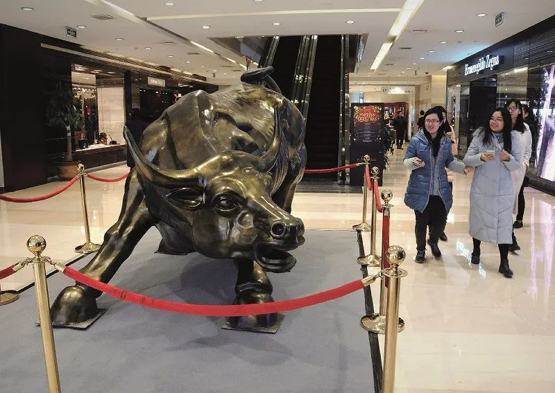

美股又熔断！10天4次，巴菲特：…
原文链接 备份链接 “神奇的2020，我们和股神一起见证历史。” 3月18日，美股因标普500指数盘中跌超7%，再次触发熔断机制，暂停交易15分钟，为美股史上第五次熔断，10天内第四次熔断。 美股熔断时三大股指跌幅情况。 此前，3月9 …

中国证监会副主席李超表示，与境外市场相比，国内资本市场总体平稳，A股展现出了比较强的韧性，投资者的行为更加理性

全球对比来看，A股显示了极强的抗跌属性。图/视觉中国
文 |《财经》记者 郭楠 杨秀红
编辑 | 陆玲
每天股市开盘，都在见证历史。2月19日至3月19日，短短一个月时间，多国病例数破万，NBA停摆，道琼斯指数从接近30000点，下跌至不足20000点，其间经历了四次熔断，波音市值缩水四分之三，特斯拉股价腰斩，埃隆·马斯克在福布斯排行榜上的排名迅速后退。
“现在每天都要盯着美股，过去只是开盘看一眼。”一位上海机构投资者对《财经》记者聊到了最近的变化。
美股的暴跌带来全球资产被抛售，流动性危机显现。数据显示，年初至今，全球主要市场指数中，仅创业板指收益为正，日本、韩国、英国、法国等地跌幅均超过30%，A股成为最抗跌的市场。
“坚持市场机制，不做过多干预。”中国证监会副主席李超3月22日在国新办发布会上强调。
李超表示，与境外市场相比，国内资本市场总体平稳，A股展现出了比较强的韧性，投资者的行为更加理性。此外，李超介绍，当前股票市场的杠杆资金总量与2015年高峰时相比已经下降了80％，高比例质押上市公司数量较高峰时期下降了三分之一。
再好的避风港，在台风期间也不可能没有浪。截至3月19日收盘，A股已创下2020年以来最低点，沪指最低下探至2646点，单月跌幅达6.19%。一个月时间，北上资金就流出超过千亿。经济学家陈志武表示，全球资金避风港的说法毫无逻辑。
李超认为，外资流动对A股市场有扰动，但不是颠覆性、根本性的冲击。年初至今，外资从股市净流出约200亿元，规模并不算大。
全球降息潮起，流动性仍是波动之下最令投资者关心的问题，A股投资者更是在降准之后期待降息。富达国际基金经理周文群对《财经》记者表示：“在今年基本面前景黯淡的前提下，现在支撑市场的因素主要是对后续持续流动性释放的预期，这个预期是否会实现，它的力度是否到位，流动性最终去到哪里，这些因素都可能反过来增加市场的波动。”
危机到来了吗？“目前断定全球进入金融危机还为时尚早。”中国人民银行副行长陈雨露3月22日表示。
橡树资本霍华德·马克思重新使用了“Nobody Knows”作为备忘录标题，上一次使用还是在雷曼兄弟破产两天之前。值得抄底吗？马克思认为，股价便宜了很多，但买入时机无人知晓。一位私募基金人士表示，危机中的唯一出路就是囤钱。
海外疫情冲击全球股市
国内疫情明显好转，A股反弹在2月底戛然而止，波动加剧的背后是全球金融市场冲击波。截至3月19日收盘，A股已创下2020年以来最低点，沪指最低下探至2646点，单月跌幅达6.19%。道琼斯指数跌破20000点大关，单月跌幅达到21.69%。
回到2月下旬，2月19日开始，新冠肺炎疫情在全球加速蔓延，情绪冲击下美股开启第一轮下跌，到2月末跌幅达到12.3%。
紧接着，3月5日原油黑天鹅袭来，油价暴跌引发投资者对经济衰退的担忧，美股在3月9日触发熔断，三个交易日内下跌12%，正式进入技术性熊市，避险资产黄金和美债上涨。在此之前，自美股设立熔断机制以来的30多年里，美股市场真正触发熔断机制，仅在1997年10月27日出现过。
“原油价格战加重全球被疫情压制下的市场情绪，全球风险资产均出现‘抛售潮’。”易方达多资产投资部研究负责人张浩然对《财经》记者表示。
张浩然分析称，由于能源公司债券在美国公司债特别是高收益债中占比较高，资本市场担忧原油价格下跌影响能源企业现金流、提升违约风险，而风险偏好收缩导致高收益债下跌和流动性匮乏增加了一级市场发行困难，进一步增加了违约风险和金融行业风险。在此背景下，风险资产全面回调，并且下跌幅度超过正常水平，这对银行、资管机构的资产负债表或者产品资产造成冲击。资产波动性通过金融系统传导最终影响了各个市场的流动性，这导致了金融市场出现了流动性不足，资产价格大起大落以及相关性异常上升等现象。
“美国股指自2020年3月9日始步入技术性熊市的起因主要有三点：其一，新冠肺炎疫情全球蔓延以及有关国家未采取有效防控举措，引发持续恐慌及资本市场动荡；其二，欧佩克与非欧佩克成员间的‘全面油价战争’，加剧资本市场动荡；其三，东西方大国在国家战略层面处于针峰相对状态，且将这种状况大概率将持续，世界格局大概率将发生演变。”中山证券首席经济学家李湛认为。
3月11日至18日，美股迎来第三轮下跌，伴随着三次熔断，市场暴跌引发流动性危机，杠杆资金被动平仓、机构恐慌、回购市场流动性匮乏，波及全球股市集体熔断。据不完全统计，3月12日，除美股外，巴西、加拿大、泰国、菲律宾、巴基斯坦、韩国、印尼、墨西哥、哥伦比亚、斯里兰卡等10个国家的股市因暴跌发生“熔断”。
美国当地时间3月15日，美联储紧急宣布，将基准利率降至接近零水平，并启动规模达7000亿美元新一轮量化宽松。
货币政策无法阻挡疫情蔓延，但却是金融市场的“呼吸机”。据不完全统计， 3月以来，全球至少已有28个国家及地区降息37次，美国、英国、澳大利亚、沙特阿拉伯、中国香港、中国澳门等降息了两次。
中银证券首席经济学家徐高将美国股市暴跌引发的一系列问题称之为流动性虹吸效应。徐高认为，3月9日美股熔断之后已经进入“股灾”状态，对其他资产市场形成了流动性虹吸效应，带动其他资产价格走低。美股的虹吸也导致全球资金回流美国，令人民币汇率和A 股承压。当前全球市场面临着美股的流动性危机，但不是美元的流动性危机。
也有观点将美股暴跌归结于近年来ETF规模的扩张以及高频程序化交易的助推。中国社科院世经所国际投资室主任、研究员张明撰文指出，这次美股下跌与2000年以及2008年的下跌不太一样。过去风险偏好比较低的机构投资者通过ETF和机器交易大量投资科技蓝筹股，巨大外生性冲击导致投资者权益投资出现初始亏损、进而不断进行调整导致了金融市场动荡。
不过，华安基金指数与量化部总经理许之彦并不认同。
他对《财经》记者表示：“首先，ETF几乎没有杠杆，其主要功能是配置，对于投资者的买入和卖出行为，主动和被动基金都是一样的，是任何类型的开放式基金都要做的事。其次，ETF规模做大，对市场上所有参与者都是有利的，成本更低，让市场流动性更好。同时，过去ETF的大发展确实侵占了美国市场很多主动基金的市场份额，动了一些人的奶酪。一些耸人听闻的观点，可能只是为了吸引眼球。”
外资流动冲击不大
吸引全球投资者目光的，除了雪崩式暴跌的美股，同时带动全球股市恐慌下挫，还有跌幅较小相对安全的中国股市。
陈雨露认为，目前国际金融市场通过三个渠道传导到国内金融市场，第一个是悲观的情绪，第二个是通过国际资本流出传导影响，第三个是跨国企业和资产负债表恶化。
数据显示，年初至今，上证指数下跌10.99%，深证成指下跌3.83%，创业板指上涨5.37%，而美国三大股指跌幅均超过20%，全球主要市场指数更是惨不忍睹，日经225指数、韩国综合指数、富时100指数、法国CAC40指数、德国DAX指数跌幅超过30%。
李超表示，和境外市场相比，我国金融市场总体比较平稳，A股市场展现出了比较强的韧性和抗风险能力，波动幅度较小，投资者行为更加理性，这些情况得益于金融委的领导下，下了一些先手棋。
全球对比来看，A股显示了极强的抗跌属性。周文群对《财经》记者表示，一方面是中国政府及时采取有效措施，不仅控制了病毒在境内的大范围扩散，而且迅速动用财政和货币工具推出经济刺激措施。另一方面是强劲的流动性注入，尤其是来自低利率预期下涌入市场的个人投资者。
招商证券首席策略分析师张夏表示，首先，国内疫情得到有效控制，企业逐渐复工复产；其次，中国财政货币政策协调效率最高，快速推出“稳增长”经济政策，增强了资本市场信心；另外，国内金融市场的“雷”在2015年和2018年有效排掉，金融体系杠杆下降，本轮A股风险没有演化为流动性问题。
对于A股春节后的急速反弹，周文群表示，在流动性的推动下，前期出现了创业板与主板大幅背离的情况，前期以流动性预期支撑的估值需要靠后期真实的刺激政策继续维持，整体而言，脱离基本面的炒作是很危险的，长期来说估值最终会和基本面同步，尤其在A股市场机构化进程加速的今日。
A股的平静在3月16日被打破。周一早晨，美联储紧急降息并重启QE的消息通过网络迅速传播，美国联邦储备委员会决定下调联邦基金利率1个百分点至0%-0.25%，并重启7000亿美元量化宽松计划。
从历史上看，此前只有2001年科网股泡沫破灭、“9·11”事件和2008年金融危机时期美联储曾经紧急大幅降息。所有人都在猜测，这会是什么信号。
“原本三天之后是美联储议息会议，今天美联储的意外降息，让市场恐慌。”交银国际董事总经理洪灏对《财经》记者表示。
紧接着，市场期待的公开市场降息并未与定向降准一起实现。3月16日，央行开展一年期MLF（中期借贷便利）操作1000亿元，中标利率仍然维持3.15%，同时定向降准释放流动性5500亿元。而在上周（3月9日-13日），央行连续一周未开展公开市场操作。
这个不同寻常的周一，A股全线下跌，上证指数跌破2900点大关，创业板指一度跌幅超过6%。
“最大感受就是看不清了，但是疫情会对世界经济，甚至意识形态、政治格局产生深远影响。”一位深圳私募基金总经理在3月16日收盘后对《财经》记者表示。在当晚致投资人的信中，他总结了近期市场出现的风险和操作上的错误，这令他的基金今年的盈利回吐了大半。
他在信中写道，世界普遍下跌中国不跌，此前认为中国有可能成为不一样的避风港，这轻视了系统性风险，3月16日这一天，就是各国股市联动系统性风险暴露的第一天。
一个月前的净值不断上涨，一个月后盈利迅速消失，众多A股投资人体验了过山车行情。
一位私募基金投资人对《财经》记者表示，从2019年下半年开始持有某大型宏观对冲基金产品，年初涨势喜人，但目前亏损已达15%。另一位持有科技股的散户投资者对《财经》记者感叹：“如梦如幻如泡影。”
海外市场风险加剧，流动性正从全球市场撤离，3月9日至13日，A股单周净流出金额高达417.9亿元，创下单周净流出历史纪录。从美股调整开始计算，2月21日至3月19日，北上资金净流出1021亿元，外资重仓股随着外资流出受到明显影响。
对此，李超表示，外资流动对A股市场有扰动，但不是颠覆性、根本性的冲击。
“年初到现在，外资从A股市场净流出大概200多亿人民币，与2019年外资集中进入A股相比，可能反差显得比较大。但实际上这个净流出数额规模并不大，而且目前外资占A股市场流通市值的比重还不到4%，交易占比也不是非常大。”李超分析称。
招商证券策略团队构建的A股流动性指数显示，在北上资金大幅流出影响下，该指标不断下降，在3月16日降至-6.7，这一数字在A股开市第一周为3.6。
经济基本面也在考验着A股。3月16日，统计局公布全国1月－2月国民经济运行数据，疫情冲击下，1月－2月工业、消费、投资均创下或接近同期历史最低。但洪灏认为，数据并不构成下跌的诱因，“对于2月的经济数据，所有预期都没有意义”。
“更让人担心的是，一二月份宏观数据太差，根据3月到目前为止的回升情况来看，一季度经济将是零增长，这在过去30年从来没有发生过。目前来看，全年经济实现翻一番的目标难度很大。”东吴证券首席经济学家陈李表示。
近期，已有经济学家调低了中国全年GDP增速预测。招银国际首席经济学家丁安华指出，基准情形下，一季度经济大概率陷入负增长，二至四季度反弹力度具有不确定性，疫情防控成为“持久战”，全年GDP增长预计为4.5%；乐观情形下，GDP增速在二季度开始反弹，全年有望实现5.2%增长。
中金公司首席经济学家梁红表示，1月－2月经济数据表明，实体经济受到疫情的冲击明显，其现金流受到巨大损伤，短期内企业投资和用工需求可能难以快速回升。更值得注意的是，海外疫情加速蔓延升级，海外经济活动“暂停”将对中国外需造成类似于2008年－2009年的冲击。因此，梁红认为，政策宽松时不我待。
A股投资价值显现？
A股开市之初，国内的分析者们将新冠肺炎疫情笼罩下的市场与17年前非典时期相比，得出的结论是短期影响不改长期趋势。一个月后，当美股短短十天内出现四次熔断，市场参与者们开始对比，是否回到了2008年金融危机前夕。
3月3日，橡树资本联合创始人霍华德·马克思发表了题为“Nobody Knows”的备忘录，上次使用这个标题，是在2008年9月19日，即雷曼兄弟递交破产申请前两天。
他在备忘录中写道，可以考虑买进一些股票，但是花光所有的钱来买股票是没有道理可言的，因为归根结底，疫情、经济和股市到底会怎样发展，无人知晓。
3月4日，中国央行发布工作论文——《金融危机传染实证分析研究》，论文指出，金融危机时期和危机后，金融市场相关性显著增强的现象，最终表现为汇率、利率、资产价格以及交易规模等金融市场要素的联动变化。金融危机时期，中国股市下跌与美国股市下跌一定程度上存在联动，但中国股市的波动也有一定独立性。
陈雨露3月22日在国新办发布会上指出，国际金融危机有三个特征：一是跨市场的恐慌性下跌，二是大量金融机构特别是系统重要性金融机构倒闭，第三是全球实体经济运行是否受到严重破坏。目前针对市场动荡加剧，许多市场出台应对措施，目前这些措施效果还有待观察。
况客科技CEO欧阳明清曾长期在嘉信理财负责资产配置相关工作，他对《财经》记者表示，在美联储量化宽松政策下，美股走过了长达11年的平稳牛市，此次调整可以算是一个正常修正。“目前是典型的熊市特征，市场一边倒卖出。与2008年最大的不同是，新冠肺炎疫情将真正改变美国人的生活习惯，这在‘9·11’时期都没有发生。”
“从股票的跌幅来看，已经与2008年类似，且上周开始出现流动性危机。”曾经在雷曼负责量化交易的江少坤对《财经》记者表示，“美股经历了长达11年的牛市，已经有泡沫，而且现在疫情并未见顶，直到这一不确定因素消除之后，市场才会稳定。”
脆弱的市场正经受着各种考验。北京时间3月17日，一则桥水基金爆仓的传闻开始流传，桥水基金创始人瑞·达利欧迅速出面回应，同时向外界公布了基金业绩表现。
瑞·达利欧在1月接受媒体采访时表示，现金就是垃圾。然而，两个月之后，再没有比现金更珍贵的资产了。
“我们刚拿到了清华基金会的资金，市场急转直下，有钱没办法投，如果早一阵子拿到，可能已经亏损了。”欧阳明清对《财经》记者表示。
“美国国债在上周之前，都保护得很好。上周流动性危机开始了，大家都要抽钱走。回到2008年，最恐慌的时候就是现金为王，现在也类似。”江少坤表示。
哲投投资总经理赵越在一场电话会议上表示：“一个月时间，道琼斯从30000点杀到了20000点，但依然没有见底，金融危机已经爆发，而危机中的唯一出路就是囤钱。”
四次熔断之后，市场上抄底的声音开始增加。
3月19日，中原证券研究所所长王博表示，国内疫情控制已经接近尾声，即将全面复工复产，A股风险释放将快于国际市场，当前沪指已经逼近2月4日低点，海外疫情影响应当较为充分，A股调整或已到位，将重回中长线以成长风格为特征的向上趋势中。
张浩然则对《财经》记者表示，短期内全球市场均可能维持高波动的状态，但大幅下跌的权益市场价格和接近历史极值的股债性价比显示，长期来看我们可能接近一个非常好的风险资产的买入机会，建议投资者采取在大类资产中分散化投资的方式来保护自己，避免受到单一资产的重大冲击。
“长期来看，中国未来的经济会由科技和消费主导。”周文群表示，“中短期来看，消费板块在经济下行周期会有更大的压力。近期市场对疫情的解读在消费和科技上出现明显分化，看空消费，看多科技。然而我们对此相对谨慎，我们认为市场对5G等热点领域的期待过高，对科技需求（如手机产业链）的下行风险预计不足，短期来看科技板块估值偏高。”
对于基建和房地产板块，周文群表示，不排除政府会推出短期的刺激措施，用投资稳增速，但我们不认为会出现方向性的改变，因此不会出现长期的趋势性机会。
对于外资的净流出趋势，周文群表示：“北上资金流出幅度可控，仅占每日总交易量的1%－2%。相信这个趋势会很快逆转，毕竟中国在抗击疫情方面的进度领先于其他市场，具有明显的优势。”
“长期来说，外资加大对A股市场配置的趋势没有改变。”周文群认为，“增量资金的进入不仅对股价形成支持，而随着外资逐步熟悉中国股票市场，他们的投资标的会从白马股向二三梯队的优质公司扩展，这也会逐步改变 A 股的估值体系。”
此次发布会上，李超表示，从A股市场的内在结构看，市场整体估值较低，目前上证综指的市盈率不超过12倍，上证50市盈率不到9倍，无论与境外市场横向比较，还是与A股市场的历史纵向比较，都处于较低水平，A股投资价值显现。
此外，新《证券法》落地，注册制改革稳步推进，国内资本市场的改革步伐并未放缓。李超表示，创业板改革相关工作正在有序推进，目前已经做了一定阶段的研究论证，并在一定范围内征求意见，创业板的改革重点会抓好注册制这条主线，同时会在发行、上市、信披、交易、退市等基础制度等方面做出改革安排。
李超介绍，资本市场开放包括两方面，一是市场的开放，证监会在做制度规则的推进，下一步会稳妥推进可投资的范围和品种；二是准入的开放，证监会在2019年核准了几家外资控股的券商，也将在4月1日允许证券基金公司外资可独资。

▲点击图片查看更多疫情报道
责编 | 蒋丽 lijiang@caijing.com.cn
本文为《财经》杂志原创文章，未经授权不得转载或建立镜像。如需转载，请在文末留言申请并获取授权。
原文链接 备份链接 “神奇的2020，我们和股神一起见证历史。” 3月18日，美股因标普500指数盘中跌超7%，再次触发熔断机制，暂停交易15分钟，为美股史上第五次熔断，10天内第四次熔断。 美股熔断时三大股指跌幅情况。 此前，3月9 …
原文链接 备份链接 疫情持续在中国境外蔓延会恶化市场情绪，美欧股市最近两天持续下跌与此有关。展望未来，资本市场持续上行的希望在于：中国疫情防控企稳，世界其他地区迅速协调行动 文 |《财经》特派华盛顿记者 金焱 《财经》 …
原文链接 备份链接 从1月等到3月，路上的花慢慢开了，有时候能闻到白玉兰的清香，春天已经到了，但全球的疫情还没有随着温度的升高衰落下去——法国有男人购入了满满一购物车的法棍，意大利的居民被隔离在家只能在窗台上唱歌剧，有人在微博上分析今天 …
原文链接 备份链接 文/范欣 3月以来，美股接连发生熔断，让全球投资者都惊出了一身冷汗，连股神巴菲特都惊叹“活久见”，芝加哥期权交易所（CBOE）恐慌指数VIX也在3月17日超过2008年金融危机时的高点，创下收盘记录新高。受此影响，连黄 …
原文链接 备份链接 又是惊心动魄一夜！ 在疯狂降息和超级量化宽松政策失效后，美联储再度祭出救市“大杀器”，美国政府也在积极酝酿万亿刺激计划，启动“直升机撒钱”时代。 消息传出后，昨日晚间跌破20000点的道指盘中开始暴力拉升，纳斯达克指 …